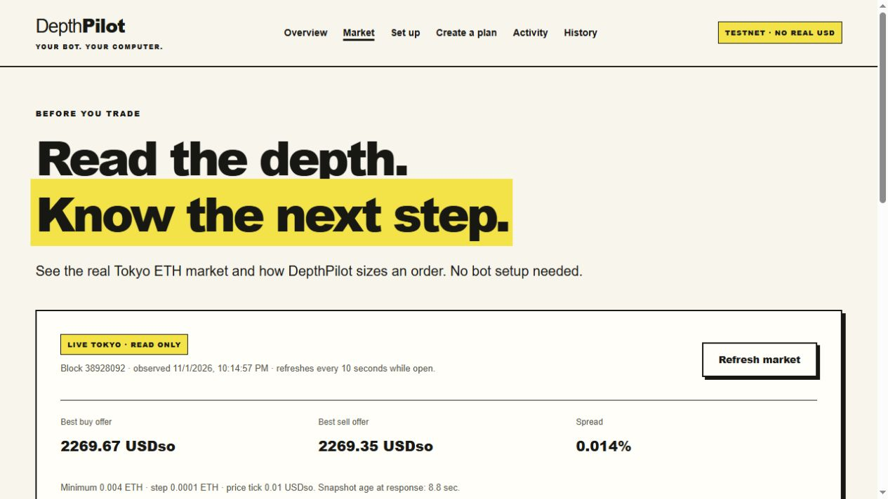
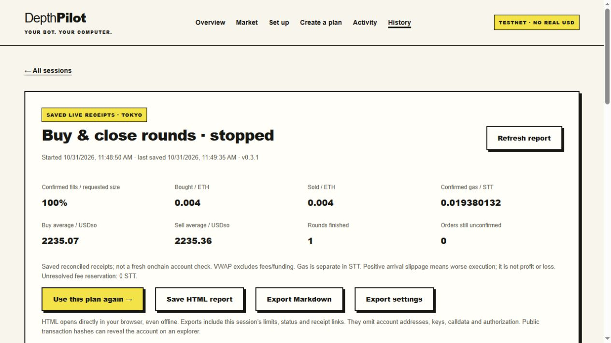
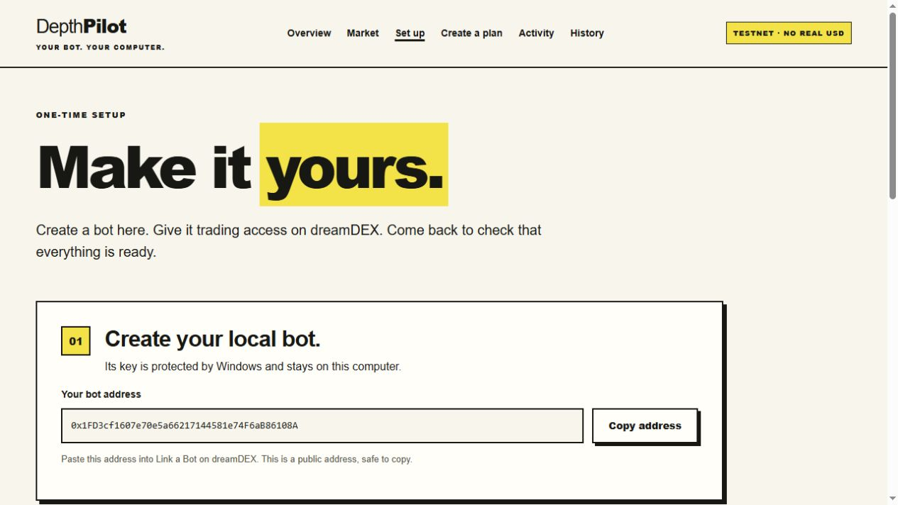
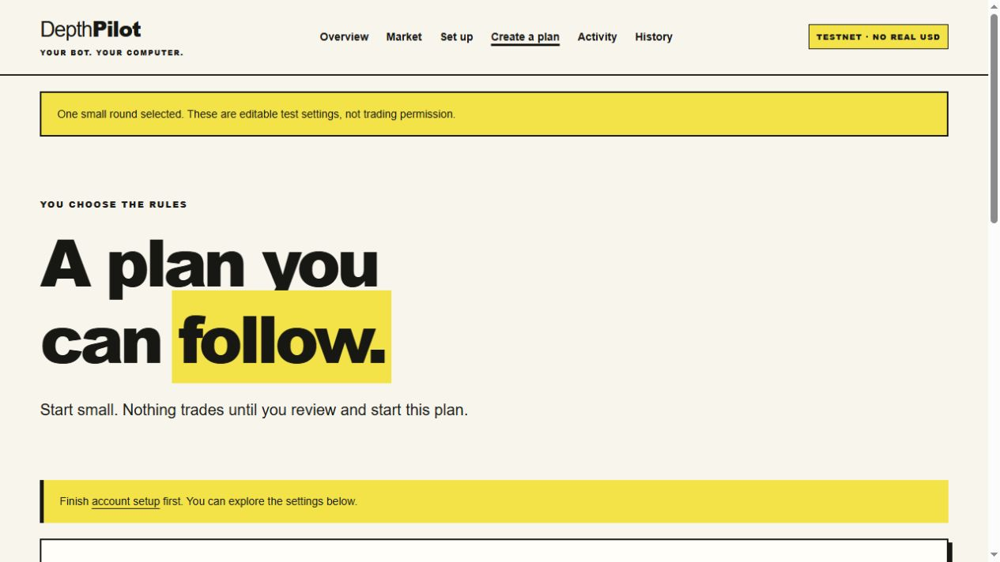

BEFORE YOU RUN
Read the market.
Explore depth, spread and the next order preview before creating a bot. No account needed to look.
VISIBLE DECISIONS. VERIFIABLE RECEIPTS.
A local dreamDEX perps bot that follows your limits and explains its next step. Watch our reference operator, then try DepthPilot on your own Windows PC.
Testnet only. No main-wallet key import. No wallet connection on this website.
BUILT ON DREAMDEX
dreamDEX is an onchain order-book exchange on Somnia. DepthPilot uses its official Markets SDK to read the market and execute your ETH-perps plan on Tokyo testnet. You choose the rules; the bot checks them before each order.
About dreamDEX ↗ · Official Perps SDK guide ↗
BEFORE YOU RUN
Explore depth, spread and the next order preview before creating a bot. No account needed to look.
WHILE IT RUNS
Why this step? puts saved market observations beside your rules, so you can see why the bot acts or waits.
WHEN YOU NEED CLARITY
Read current permissions, positions, gas and pending receipts. This check never restarts a plan or sends another order.
AFTER A SESSION
Review confirmed fills and fees in History. Export an HTML or Markdown report, or reuse settings as a new plan to review.


Open a small ETH position, wait for your chosen hold time, then attempt to close it before another round. A failed exit can leave a position needing attention.
Split a target into smaller orders within your price, timing and fee limits. The resulting position stays in your account; this mode does not automatically close it.
A REAL REFERENCE RUN · READ ONLY
This reference operator is a separate local deployment. It is not a new run of your downloaded installer. Snapshots publish about every five minutes; network caches can add delay.
A submitted transaction is not a fill. Confirmed results appear below.
THE CURRENT DECISION
The latest reason will appear after the first successful refresh.
Equity is an account observation, not a profit measure. Fees, funding and account changes matter. Safety thresholds are triggers, not guaranteed loss limits.
THE ORIGINAL RUN LIMITS
The runner stops opening when a guard or quota is reached. A restart does not renew these limits. A PC that is asleep or offline cannot run a local bot.
RECEIPTS BEFORE CLAIMS
| Time | Action / result | Filled / requested ETH | Average USDso | Gas STT | Transaction |
|---|---|---|---|---|---|
| No snapshot loaded yet. | |||||
Receipt data is saved by the runner. Check a public hash on the explorer for independent confirmation. Successful transactions can still have partial or zero fills.
RECENT OBSERVED STEPS
Recent published decisions, including waits and pauses.
WINDOWS 64-BIT · VERSION 0.3.2
Choose one installation method. Both open the same local dashboard and include the runtime. You do not need Node.js, a GitHub account or administrator access.
OPTION A · DOWNLOAD AND DOUBLE-CLICK
To reopen later, use the same Open DepthPilot.bat. Run it from the extracted folder, not from inside the ZIP.
OPTION B · INSTALL WITH POWERSHELL
Use the Desktop or Start Menu shortcut to reopen. The background app stays out of the way.
Show the installation command ↓Copy the entire block. Review it here or download the command as a .ps1 file.
Copying only copies text. Run it in PowerShell when you are ready to install.
& {
$ErrorActionPreference = 'Stop'
$DepthPilotURL = 'https://github.com/duclucky/depthpilot/releases/download/v0.3.2/DepthPilot-0.3.2-windows-x64.zip'
$DepthPilotSHA256 = 'e3f4d2a282705cccf91a50dc7132700c00e2ea44e93623cc36bb11e8bfcc1934'
$DepthPilotFolder = Join-Path $env:LOCALAPPDATA ('DepthPilot\downloads\0.3.2-' + [Guid]::NewGuid().ToString('N'))
New-Item -ItemType Directory -Path $DepthPilotFolder | Out-Null
$DepthPilotZIP = Join-Path $DepthPilotFolder 'DepthPilot.zip'
Write-Host 'Downloading and checking DepthPilot 0.3.2...'
Invoke-WebRequest -UseBasicParsing -Uri $DepthPilotURL -OutFile $DepthPilotZIP
$DepthPilotStream = [IO.File]::OpenRead($DepthPilotZIP)
$DepthPilotHasher = [Security.Cryptography.SHA256]::Create()
try { $DepthPilotActual = [BitConverter]::ToString($DepthPilotHasher.ComputeHash($DepthPilotStream)).Replace('-', '').ToLowerInvariant() }
finally { $DepthPilotStream.Dispose(); $DepthPilotHasher.Dispose() }
if ($DepthPilotActual -ne $DepthPilotSHA256) { throw 'SHA-256 check failed. Nothing was installed.' }
Add-Type -AssemblyName System.IO.Compression.FileSystem
[IO.Compression.ZipFile]::ExtractToDirectory($DepthPilotZIP, $DepthPilotFolder)
$DepthPilotApp = Join-Path $DepthPilotFolder 'DepthPilot-0.3.2'
& (Join-Path $DepthPilotApp 'runtime\node.exe') (Join-Path $DepthPilotApp 'scripts\install.mjs')
if ($LASTEXITCODE -ne 0) { throw 'Installation did not finish. Stop and close an existing DepthPilot app before trying again.' }
}The command checks the release hash and does not change execution policy. If your PC restricts scripts, use the ZIP method. This release is not code-signed; use the project’s official download and published checksum.
Already using DepthPilot? Stop and reconcile the plan, then choose Close local app before updating. Your profile stays in place; installing does not renew trading permission.
ONE-TIME SETUP · FOLLOW AT YOUR OWN PACE
The local app creates a separate bot key. Your main-wallet private key is never an input. Grant trading access on the official dreamDEX website, then return to your local app.
In the local dashboard, open Set up → Create my bot. Click Copy address. This is the public bot address you will give dreamDEX.
The bot key stays on your PC, protected by your Windows user account. Reopening DepthPilot keeps the same bot.

Open dreamDEX testnet and sign in there. Select the Somnia Account you want the bot to trade, then follow the official Link a Bot guide.
Paste your public bot address. Enable Perps; leave Spot off for DepthPilot. Review any gas transfer, complete Add bot, then return to the local app.
Linking happens on dreamDEX. This public website has no wallet connection or account-linking form.
STT pays network fees; test USDso supplies trading margin. They are different balances, held by different accounts.
In DepthPilot, choose Check my test gas. Trading uses Tokyo, chain 50383. Setup requires at least 1.12 STT at the bot address, including a 1 STT reserve. Your selected plan may require more.
If your gas is already on Tokyo, use dreamDEX’s Bots → Top up or a transfer explicitly on Tokyo, then check again.
Copy your selected Somnia Account address into Trading account address, then choose Check my account. Resolve any missing permission, gas or margin shown.
Readiness requires at least 1.5 test USDso margin and no existing positions or open orders. The local app also checks the live market requirements.
Open Create a plan and use One small round as an editable starting point. Review the addresses, size, fee budget and timing. Only Start this plan after your confirmation activates trading.
Follow Activity after starting. Installation, a market preview and loading saved settings do not activate a plan.

A linked bot can trade the account margin you grant it, but cannot withdraw or transfer that account’s funds. Trading can still lose margin. Local plan limits are software controls; exits depend on the process, network, gas and liquidity. Linked bots cannot arm exchange-held TP/SL themselves.
SEE THE APP BEFORE INSTALLING
Follow setup, market preview, plans, explained decisions and saved receipt reports in the 0.3.2 interface.
Edited walkthrough with synthetic English narration, real UI screenshots, labelled historical receipts and a labelled simulated wait example. It is not a continuous live-trading recording or proof of profitability. English captions are included in the video.
Download the walkthrough ↓A FEW THINGS TO KNOW
No. This website is read-only. The installed app creates its own local bot key. Grant Perps access through official dreamDEX Link a Bot and paste only the public trading-account address into DepthPilot.
Closing the tab does not stop the background bot. Your PC must stay on, awake and connected. To stop, use the local app’s Stop control and follow reconciliation; closing the tab is not a stop action.
Use Open DepthPilot.bat, or your installed shortcut. For rounds, Stop & close stops new entries and requests a close of the bot-owned position. Wait for the result and check positions/pending orders. Then use Close local app. A stop request does not guarantee a closed position; target-mode stops do not reverse earlier fills.
Your trading account’s margin is not the bot’s gas. The separate bot needs STT on Tokyo to send orders. Read the gas guide if STT arrived on Shannon instead.
Waiting can be the correct decision: spread, stale data, price, depth, entry timing or a remaining budget may block an order. Open Activity and Why this step? to compare saved observations with your rules. Check current state reads the account without sending or restarting.
No. It shows our separate reference deployment, refreshed about every five minutes plus possible cache delay. Recorded transactions can be expanded; decisions show only the latest 60 published steps. The complete journal of your own installed bot stays local, and reports are available in History.
This release supports Windows 64-bit and ETH perpetuals on Tokyo testnet. A macOS/Linux installer, mainnet execution and generic API-key trading are not included.
No. DepthPilot follows your execution rules. Testnet results do not establish a profitable strategy. Fees, funding, partial fills and unsuccessful exits matter; equity and gas figures are not a complete PnL calculation.
Stop and reconcile, check the actual account, then close the local app before installing an update. Stopping the local app does not remove the exchange grant. Use dreamDEX’s bot-access controls to revoke it after checking positions and open orders; revoking permission does not itself close or cancel them.
Open a GitHub issue with your app/Windows versions, the visible error and a redacted screenshot. Never upload your profile folder, private key, recovery phrase or credentials. See security guidance for sensitive reports.